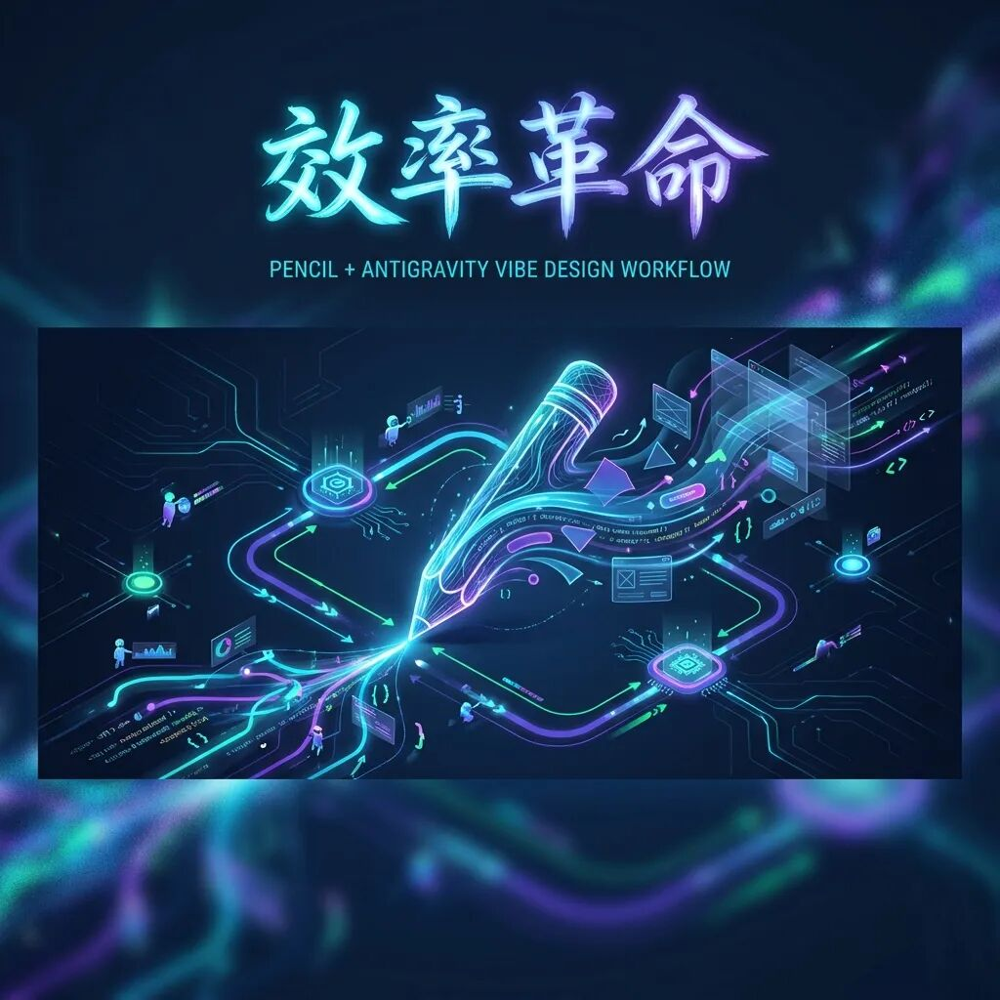
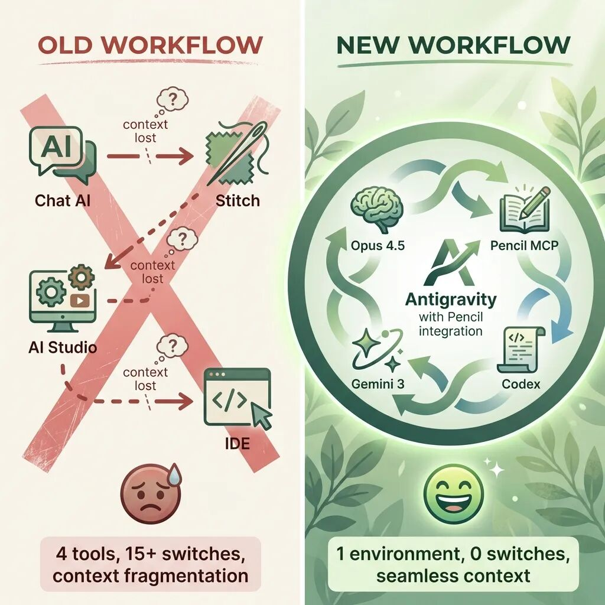
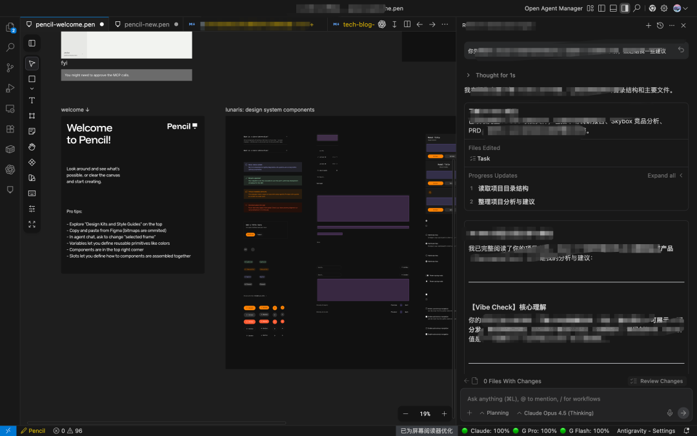

效率革命：Pencil + Antigravity 打造一站式 Vibe 工作流

从需求讨论到设计落地、再到代码实现，AI 时代的产品开发迎来了新范式
前言：AI 原生工作流的觉醒
还记得一年前，如果我告诉你「一个人就能完成产品经理、设计师、开发者的全部工作」，你可能会觉得我在画饼。但在 2026 年的今天，这已经成为现实。
最近，我在工作流中引入了一个新产品——Pencil，它与 Antigravity 的深度结合，让我彻底告别了过去繁琐的跨工具跳转，真正实现了 Vibe Design + Vibe Coding 一条龙服务。
今天，就来和大家分享这个效率革命性的变化。
痛点回顾：曾经的工作流有多「割裂」
在 Pencil 出现之前，我的工作流大致是这样的：
1. Gemini / GPT-5.2 讨论需求 → 明确产品方向
2. Stitch 生成详细设计稿 → 视觉定义
3. 导出到 AI Studio 还原效果 → 交互完善
4. 代码导出后到 Antigravity 合并项目 → 最终落地
整整 4 个工具！ 每次切换都是一次上下文中断。
更让人头疼的是：
- 设计资产传递：从 Stitch 导出的设计稿，往往需要手动调整才能在代码中完美还原
- 反馈循环漫长：发现风格不对，要从头走一遍流程
- 协作成本高：不同工具之间的格式兼容是个永恒的坑
这不是效率，这是效率的反面。
尴尬的定位：Paraflow 和 Stitch 的困境
说到这里，不得不聊聊 Paraflow 和 Stitch 这类产品的尴尬定位。
它们的初衷都很美好：
- Paraflow 试图成为把「产品与设计工作通过Agent串联起来」，让产品经理/设计师用自然语言生成PRD&设计稿，但是到实现还差最后一公里
- Stitch 则主打「设计到代码」的无缝衔接，自动生成前端组件，但是到项目完整交付还需要多个环节
听起来很完美，对吧？但问题在于——它们都是「链路中间件」。
§中间件的悲剧
作为中间件，它们面临两难：
- 向上依赖：需要从 AI 对话工具获取需求输入
- 向下依赖：生成的产物还要被 IDE 或代码编辑器消费
这意味着：
- 用户必须在多个工具之间「搬运」上下文
- 每次工具切换都有信息损耗
- 出了问题不知道该找谁
更致命的是，当 Agent 能力足够强时，这些中间件的价值就会被「压缩」——Agent 可以直接从需求到代码，中间环节变得多余。
破局者登场：Pencil 是什么？
Pencil 是一款 AI 原生的专业设计工具，具备类似 Figma 的设计能力，但最核心的差异在于——
它通过 MCP（Model Context Protocol） 与 AI Agent 深度集成，让设计工具变成了 Agent 可调用的「设计能力」。
§核心特性
| 能力维度 | 传统工具 | Pencil |
|---|---|---|
| 设计系统支持 | 需手动创建 | 内置组件库、自动匹配设计语言 |
| AI 交互 | 独立运行 | MCP 深度集成，Agent 可直接操作 |
| 代码导出 | 需二次调整 | 原生支持、无缝衔接 |
| 迭代速度 | 设计→导出→验证 | 实时预览、即时反馈 |
简单说，Pencil 让设计从一个「离线文件」变成了「实时可编程的画布」。
§为什么 Pencil 不是另一个中间件？
关键区别：Pencil 不是链路的一环，而是 Agent 能力的延伸。
- 它不需要「导入/导出」——Agent 直接在 Pencil 画布上操作
- 它不依赖上游工具——需求讨论就在同一个 Agent 环境中完成
- 它的输出是「代码可消费」的——Design Tokens、组件结构直接映射到代码
这就是「被集成」和「主动集成」的区别。
新工作流：一个工具搞定一切
引入 Pencil 后，我的工作流彻底变了：
Antigravity 启动 → 一个环境完成全部工作
├── 需求讨论：Opus 4.5 深度对话
├── 设计生成：Pencil MCP 调用，组件级精确控制
├── 代码实现：Gemini 3 Flash 快速迭代
└── 代码审查：Codex 自动 Review
§实际体验分解
1️⃣ 需求讨论：与 Opus 4.5 的深度对话
需求讨论不再是「我说你听」，而是真正的对话。
我可以用自然语言描述：
「我想做一个 SaaS 后台的数据看板，要有 Bento 布局的感觉，主色调用深色模式，用户能看到的关键指标有 DAU、MRR、Churn Rate」
Opus 4.5 会：
- 复述理解，确认核心需求
- 给出 MVP 功能建议
- 预判技术栈选型
这比过去「自己写 PRD → 自己审 PRD」的单人模式高效太多。
2️⃣ 设计生成：Pencil MCP 的组件级控制
这是最惊艳的部分。
以前我需要：
- 在 Stitch 中生成大致布局
- 手动微调每个组件的间距、圆角、阴影
- 导出后还得在代码里再调一遍
现在，Antigravity 直接调用 Pencil MCP：
// 示例：批量设计操作
sidebar=I("mainFrame", {type: "ref", ref: "SidebarComponent"})
card1=I("contentArea", {type: "ref", ref: "StatsCard", width: "fill_container"})
U(card1+"/titleText", {content: "日活用户"})
U(card1+"/valueText", {content: "12,847"})
关键能力：
- 组件化设计系统：
Button/*、Card、Input Group/*、Sidebar等即用型组件 - Slot 插槽机制：组件内可灵活替换内容
- Design Tokens：颜色、圆角、间距全局一致
设计即代码，代码即设计。
3️⃣ 代码实现：Gemini 3 Flash 的极速输出
设计稿生成后，Gemini 3 Flash 接手：
- 读取 Pencil 的
.pen文件结构 - 按照设计令牌还原样式
- 生成 React / Next.js 组件代码
整个过程无需人工干预，10 分钟内就能看到可运行的原型。
4️⃣ 代码审查：Codex 的自动 Review
最后一步，Codex 自动扫描生成的代码：
- 安全漏洞检测
- 代码规范校验
- 性能优化建议
人工只需要关注业务逻辑，底层质量由 Agent 把关。
效率对比：数据说话
我统计了过去一个月的项目数据：
| 指标 | 旧工作流 | 新工作流 | 提升 |
|---|---|---|---|
| 单个页面设计时间 | 45 分钟 | 12 分钟 | 73% ⬇️ |
| 设计→代码转换时间 | 30 分钟 | 自动化 | 100% ⬇️ |
| 单日迭代次数 | 3-4 次 | 10+ 次 | 3x ⬆️ |
| 跨工具切换次数 | 15+ 次 | 0 次 | 100% ⬇️ |
这不是「快一点」，这是数量级的跃迁。

深度体验：几个让我「哇」的瞬间
§瞬间 1：实时预览终于成真
过去每次改动都要「保存 → 导出 → 刷新」，现在 Pencil 的 get_screenshot 功能让 Agent 可以实时截图验证：
// Agent 自动验证设计效果
mcp_pencil_get_screenshot({nodeId: "dashboardFrame"})
改一点、看一点、调一点，反馈循环从分钟级缩短到秒级。
§瞬间 2：Design Tokens 全局生效
改一个颜色变量，全站所有使用该变量的组件瞬间更新：
mcp_pencil_set_variables({
variables: {
"$--primary": "#6366F1" // 换主色
}
})
不用再一个个找 CSS 手动改了。
§瞬间 3：Slot 机制的灵活性
组件不是死的，Slot 让内容可以「插进去」：
sidebar=I(page, {type: "ref", ref: "sidebarComponent"})
// 往 sidebar 的内容槽位插入自定义项
I(sidebar+"/contentSlot", {type: "ref", ref: "SidebarItem"})
这解决了过去「组件太死板」的痛点。

另外，如果你想尝试，我建议你直接在你习惯的IDE中安装pencil的插件，而不是下载pencil客户端，体验会更加爽。除非你真的是做设计。
未来思考：多链路协作的终局
Pencil 的出现让我开始思考一个更宏观的问题：
是否所有多链路协作的场景，最终都会走向融合？
§融合是必然趋势
回顾软件开发的历史：
- 编辑器 + 编译器 + 调试器 → IDE
- 设计稿 + 切图 + 样式表 → Design System
- 需求文档 + 设计稿 + 代码 → ?
每一次「融合」都带来了效率的飞跃。而 AI Agent 的出现，正在加速这个进程。
Pencil + Antigravity 的组合，本质上就是「需求-设计-开发」链路的融合。
§企业内的多角色协作会消失吗？
这是一个更有趣的问题。
我的判断是：角色不会消失，但协作方式会彻底改变。
传统模式：
产品经理 → (需求文档) → 设计师 → (设计稿) → 开发 → (代码)
未来模式：
产品经理 + 设计师 + 开发 → (同一个 Agent 上下文) → 交付物
关键变化：
- 上下文共享：所有角色在同一个 Agent 环境中工作，信息不再「搬运」
- 实时协作：产品经理可以直接看到设计稿的变化，开发可以实时预览代码效果
- 职责边界模糊：当 Agent 能处理 80% 的执行工作，人类更多是「决策者」和「审核者」
§多角色协作能力将成为关键
如果这个趋势成立，那么未来的 AI 工具必须具备多角色协作能力：
- 权限管理：谁能改设计？谁能改代码？
- 版本控制：每个角色的修改都可追溯
- 冲突解决：设计和代码冲突时，如何自动协调？
- 审批流程：关键节点需要人工确认
Pencil 目前还没有完全解决这些问题，但方向已经很清晰——下一步一定是多人协作能力的增强。
适用场景：谁最需要这套工作流？
- 独立开发者 / Solo Creator：一个人打全场，终于成为可能
- 早期创业团队：用 AI Agent 替代 2-3 人的工作量
- 企业创新部门：快速验证想法，不用走冗长的设计评审流程
- 内容创作者：设计公众号封面、信息图、小工具页面
如果你还在「需求→设计→开发」这条老路上走，是时候试试新范式了。
上手建议：如何开始
- 环境配置：确保 Antigravity 已安装 Pencil MCP
- 熟悉设计系统：先用
mcp_pencil_batch_get浏览可用组件 - 小项目试水：从一个简单的 Landing Page 开始
- 建立个人组件库：把常用的设计模式沉淀下来
最后
这套工作流让我想起了一个词——「无缝」。
- 需求到设计：无缝
- 设计到代码：无缝
- 迭代到发布：无缝
当工具不再是阻碍，而是思维的延伸，创造力才能真正释放。
而更让我兴奋的是，这只是开始。当多角色协作能力成熟后，整个团队都将在同一个 AI 上下文中工作——那才是真正的效率革命。
如果你也在探索 AI 原生工作流，欢迎在评论区交流。